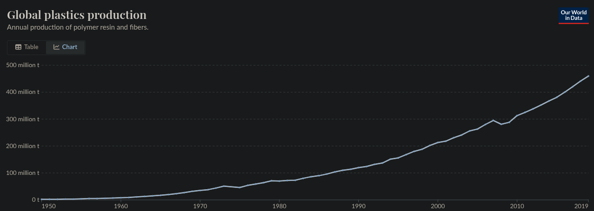

The effect of plastics on ecosystems in the ocean and how to prevent it.
Research Question
How does the everyday use of plastics impact ecosystems in the ocean?
Hypothesis
If plastic pollution continues then the ecosystem will continue to deteriorate as the water becomes more acidic
and animals continue to get poisoned.
Background
Plastic is widely used for many purposes like packaging, food containers, bottles, bags, and more. Although very
useful, most of these plastics are single use and when they aren’t properly disposed of, they can be carried by
wind or water into rivers and eventually the ocean. Over time, these plastics break down into tiny pieces called
microplastics, which are less than 5mm in size.
During this project the sources used are all official scientific sources that are always fact checked. Any math
will be confirmed with a calculator and any further sources included will be fact checked by the cited websites.
Any
investigation done will be from official sources and any writing will also be done by myself.
Analysis
Marine animals often mistake plastic for food or become entangled in it, leading to injury or death.
Microplastics
can
also be consumed by small organisms at the bottom of the food chain, eventually working their way up to larger
animals,
including fish that humans eat. This pollution disrupts life in marine ecosystems, harms biodiversity, and may
even
pose
health risks to people as we use products from these areas.
These plastics also increase the heat and decrease the pH of the oceans, these changes lead to the environment
becoming
harmful to the communities of life there. These changes to the ecosystem also lead to further damage like global
warming
as plastics and greenhouse gasses harm the atmosphere creating more extreme environments across Earth. In the
ocean
the
ecosystem is very diverse, but as the environment changes to be more extreme, diversity will decrease drastically
as
natural selection picks off species unfit for the new environment. As some of these species die off, animals who
prey on
them will also start to starve as they run out of food, further damaging the ecosystem.
graphs

Graph showing plastic production dramatically increasing over time (5)
pH of the ocean becoming more acidic caused by increased plastic pollution
Extra Questions
How does plastic and other materials congregate in places like the great pacific garbage patch
How does plastic cause the increase in acidity of water
Why is plastio made with harmful materials
Why doesn't plastic break down well
Solutions
Hydrodynamic separators are widely used in stormwater treatment. They are flow-through structures with a
settling or separation unit to remove sediments, floatables, and other pollutants.
Catch basin outlet screens are installed inside storm drains. These are screens or filters that block trash
from entering stormwater intake pipes. Those with mesh size >5mm can be certified as 'full capture devices' in
California. Often, screen systems will release trash if overflows occur.
Trash screens are designed to keep trash on the street and stop trash from entering the storm drain system.
This
trash is
kept on the street, so it can be swept up by street sweepers before it reaches the catch basin. The styles and
sizes of
openings differ, so these devices differ in their effectiveness.
Conclusion
This reveals how plastic can damage the ocean’s ecosystems severely leading to drastic changes and
problems like species dying off and the environment becoming toxic. All of the factual information that I found
solidly
demonstrates the harmful effects of plastics on the environment especially on the ecosystems found in the ocean.
Sources
“Trash Free Waters | US EPA.” Environmental Protection Agency (EPA), https://www.epa.gov/trash-free-waters. Accessed 20 May 2025.
“Plastic | Marine Debris Program.” Marine Debris Program, 10 April 2025, https://marinedebris.noaa.gov/what-marine-debris/plastic. Accessed 20 May 2025.
Environment.” National Geographic, https://www.nationalgeographic.com/environment. Accessed 20 May 2025.
Ocean Conservancy: Home, https://oceanconservancy.org/. Accessed 20 May 2025.
Ritchie, Hannah. “Global plastics production.” Our World in Data, 26 September 2023, https://ourworldindata.org/grapher/global-plastics-production. Accessed 20 May 2025.
“Global Ocean Acidification Increase.” ESA, www.esa.int/ESA_Multimedia/Images/2024/02/Global_ocean_acidification_increase. Accessed 20 May 2025.
Notes
Plastics are designed to be strong and degrade super slowly meaning they can remain for many years (2)
Plastics break down into microplastics which become even harder to remove (2)
Even plastics labeled as biodegradable can remain for an indefinite period of time (2)
Most of the synthetic polymers that make up plastic are based on petroleum which is often very poisonous (1)
Chemical additives like plasticizers, flame retardants, and pigments are often used in the production of plastic materials and are all often poisonous (1)
Many animals are exposed to plastics or even consume them leading to ingestion of chemicals and persistent organic pollutants (1)
These microplastics spread everywhere and have been found on top of Mt Everest and the deepest part of the Mariana Trench (3)
Microplastics have also been found drifting in the air and in water fountains (3)
Plastic bag reduction policies in many countries reduce damage to the environment (4)